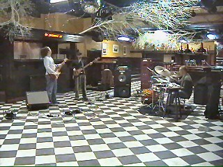
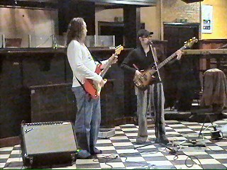
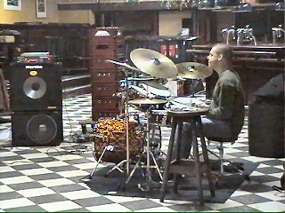
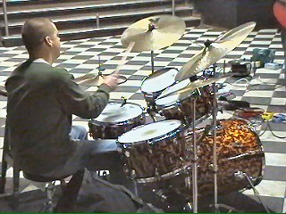
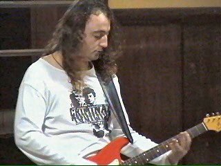
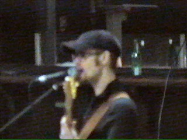

|
Preview Roda-song "DOGMAN" |
Tekst van het lied geheel beneden

Het jaar 2004 start voortreffelijk met een eerste
preview van de nieuwe Roda-song van Dogman
in de Stoba te Echt.

Omdat Michiel, de zanger van de band in Brazilië
is voor vakantie, neemt Bas de zang over.
Wanneer het nummer definitief opgenomen wordt
in de studio zullen er 15 Rodafans meezingen.

Wim, de drummer.

De opnamen worden wellicht door L1 TV gefilmd.

Er wordt ook een poging gedaan om enkele
Rodaspelers mee te laten zingen.

De Roda-song is tekstueel nog niet helemaal af.
Muzikaal gezien mis je in deze preview uiteraard
de voltallige stemmen.
Na mixen en masteren zal het Roda-publiek rond
februari/maart een fantastisch Roda-lied mogen
begroeten! Klik hier voor de preview.
We are Roda and we're here to stay, we ain't goin anywhere
The Yellow black strenght will raise again and nothing will block our way
We are pride, we are strong, we are the yellow black
A jool is jool, that's a fact and there ain't no turning back
The pride from the south, the strenght within
We are proud of what we are and we are the yellow black
It doesn't matter who you are, it doesn't matter where youre from
When the bal hits the net, you know who we are.
refrein:
We wanna hear
We wanna see
We wanna scream,,,,,,,,,,,,Forza Roda
We wanna hear
We wanna see
We wanna scream ,,,,,,,,,,Let's go Roda
We wanna hear
We wanna see
We wanna scream,,,,,,,,Scoren Roda
OOOH OOOH OOOH Danke Bitte
Tweede gedeelte refrein is zoals gedeelte op de preview. Suggesties voor een tweede couplet zijn welkom. Stuur
deze naar Dogman of naar koempel@koempel.nl
© Koempels
Pleasure Dome